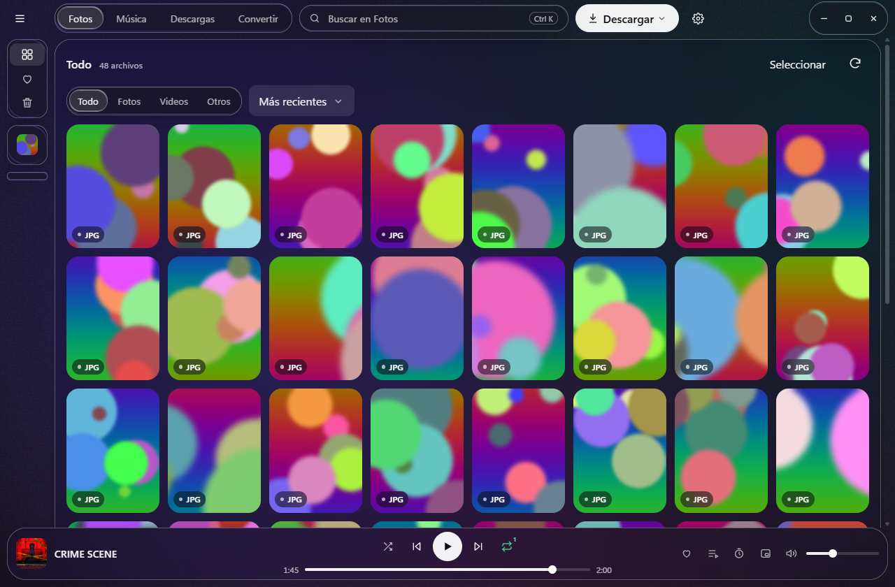

Bakin
Tu biblioteca de fotos y música, en tu PC.

Fotos
Baja perfiles y posts de Instagram en la máxima calidad disponible, solo fotos. Retoma donde quedó y no repite lo que ya tienes.
Música y video
Pega un enlace de YouTube, SoundCloud y muchos más: eliges formato y calidad. Playlists enteras, en cola, con límite diario y horario.
Bakin Música
Un reproductor liviano: artistas, álbumes, playlists, mixes, aleatorio inteligente y un modo mínimo. Sigue sonando con la ventana cerrada.
Todo en tu PC
Tus archivos quedan en tus carpetas. Bakin no guarda tu contraseña y se actualiza solo cuando sale una versión nueva.
Novedades
- Mira las novedades en la página de versiones.
Al instalar
El instalador todavía no tiene firma de código, así que Windows puede mostrar «Windows protegió tu PC». Toca Más información y después Ejecutar de todas formas. Las actualizaciones dentro de Bakin sí van firmadas y se verifican antes de instalarse.